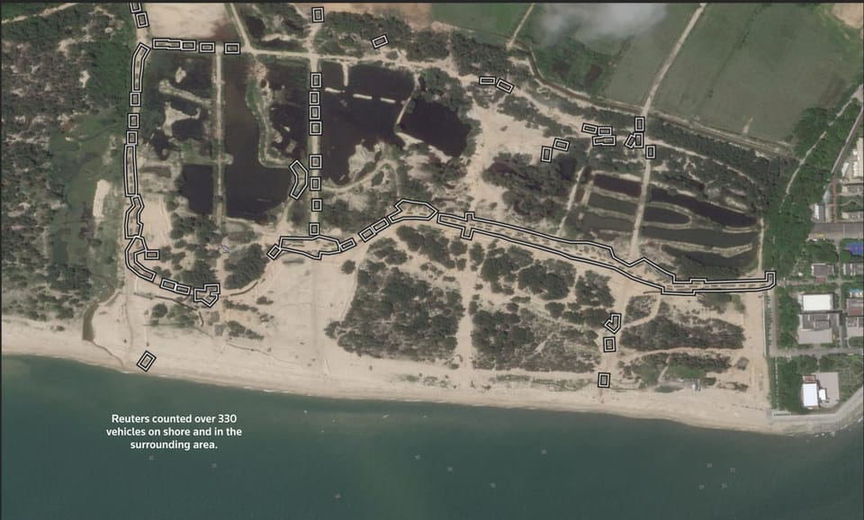

世界苦茶11月20日新闻 | 40条 | 英伟达业绩大涨缓解市场担忧

英伟达业绩大涨缓解市场担忧｜美国对台出售第二批军火 | 台湾蓝白合谈判启动 | 美国与俄罗斯正在商讨令人担忧的乌克兰和平方案 | 荷兰暂停接管安世半导体
苦茶数据
美元兑人民币：7.11（昨日7.11，前日7.11）
美元兑日元：157.87（昨日155.52，前日155.02）
上证指数：3931（昨日3942，前日3947)
标普500指数：6763（昨日6617，前日6672）
比特币：90707（昨日92581，前日90105）
布伦特原油：64.04（昨日64.61，前日63.76）
中国新闻
• 中国大陆可签发台民众来往通行证口岸增至100个。
中国大陆自星期四起，可签发一次有效台胞证的口岸将扩大至100个。中国国务院台湾事务办公室以“说走就走的旅行”为号召，邀请台湾民众赴大陆观光。但台湾政府的大陆委员会认为，这项措施吸引力有限。国台办发言人朱凤莲星期三在新闻发布会宣布上述消息，并称100个口岸包括56个航空口岸、27个水运口岸、17个铁路公路口岸。她说，台湾民众若未提前办理五年有效台胞证，可在上述口岸的出入境管理部门办理一次有效台胞证，全程只需30分钟。朱凤莲还强调，台湾民众无论办证或通关，证件上均不会留下任何标记；大陆相关部门也会依照法律法规，严格保护个人信息安全。（翻评：朱凤莲还强调，台湾民众无论办证或通关，证件上均不会留下任何标记。还给他搞得不好意思了。）
• 密苏里州寻求联邦协助，就新冠损失向中国追讨250亿美元。
密苏里州已将其在美国各地扣押中国政府所有财产的行动升级，向特朗普政府请求协助，追讨一项与新冠疫情相关、约为250亿美元的法院判决款项，中国方面断然拒绝支付。州检察长凯瑟琳·哈纳韦周三表示，密苏里州正请求美国国务院正式通知中国，州方打算对全部或部分由中国政府所有的资产采取追索以满足该判决。这一举措源自一宗诉讼，指控中国在疫情初期囤积个人防护装备，损害了密苏里州及其居民的利益。今年早些时候，一位联邦法官在中国拒绝参与庭审后作出对密苏里有利的裁决。中国在2020年起诉时称该诉讼“非常荒谬”。
• 荷兰采取重大举措化解与中国的争端，此前该争端曾威胁到汽车生产。
就在围绕一家关键芯片制造商控制权的高风险对峙达到缓和之际，荷兰周三暂停了一项有争议的命令，该命令本可使其接管中国控股的Nexperia。此次对峙曾威胁到全球汽车工厂的停产，因为Nexperia是全球汽车行业关键的计算机芯片供应商。荷兰政府表示，在与中国当局“建设性”会晤后已暂停该命令，并将继续与其对话。阿姆斯特丹在九月底接管了Nexperia，此举是在美国政府的压力下做出的——美国已将Nexperia的中国母公司闻泰科技列入被视为构成国家安全威胁的公司黑名单。法院命令还导致Nexperia的首席执行官被停职。
• 在外交争端中，中国国企要求员工取消赴日休假。
中国国企要求员工取消日本假期，驻日外交争端升级 在北京与东京之间持续升温、看不到降温迹象的外交争端中，数名中国国有企业的员工对《南华早报》表示，他们被建议取消近期赴日旅行，消息人士要求匿名。一位在中国中部武汉某国企担任工程师的员工周二接到公司行政办公室的意外电话，催促他取消即将到来的假期。像许多中国国企职工一样，他出国需经公司批准。他的休假申请上月已获批准，原定十一月底飞往大坂。但随着紧张局势加剧，他现在不得不取消整个行程。
• 中国破获日本间谍案件，誓言加强反间谍打击。
周三，国家安全部在一篇社交媒体文章中表示，已“侦破了一批涉及日本情报机构渗透、窃取中国情报的间谍案件”，并称此举“有效维护了国家核心机密安全”。该部誓言，中国国家安全人员将在反间谍战线上“坚决铲除任何分裂国家的阴险图谋”，并“坚决反对任何国家试图破坏地区和平与稳定的卑劣行径”。周三的文章没有详述具体案件，此类案件很少向公众披露。今年5月，中国证实一名日本公民因间谍罪被判刑。日本媒体此前报道，一名五十多岁的日本男子于2021年12月在上海被拘留，并于2023年8月被起诉。
• 英国称中国利用领英试图招募并策反英国议员。
英国称中国利用领英试图招募并策反英国议员 广告 “此类活动是一个外国政权以隐蔽且精心策划的方式干涉我国主权事务的行为，”他还说，英国政府“将采取一切必要措施保护国家利益、公民安全及民主生活方式”。《纽约时报》看到的这份警报指出，北京BP-YR Executive Search公司首席执行官邱璐以及香港“义工实习计划”的雪莉·沈是国家安全部用于在英国锁定目标的“平民猎头”。邱璐和雪莉·沈均未回应通过领英发送的置评请求。“这些猎头通常是中国境内人士，先与目标对象建立初步联系，再将其转介给情报官员，”军情五处的警报称。
• 经济学人：2026年习近平在地缘政治上可能会从防守转向进攻。
在经历了相当成功的2025年后，习近平和中国领导层在2026年将面临诱惑重重的一年。迄今为止，他们在特朗普的贸易战中打得一手好牌，有效缓冲了中美贸易战对中国经济的冲击，进行了灵巧的反击，并在其他方面采取了静观其变的策略，任由白宫主导的美国主导的世界秩序解构加速进行。但骄傲自满始终困扰着中国共产党。到了2026年，习近平将更容易受到诱惑，更加强势地捍卫中国利益。这将在三大领域带来冒进风险：贸易、台湾，以及中国主导的全球新规则。
印太新闻
• 美国向台湾出售地对空导弹防御系统NASAMS。
这是特朗普政府第二任期内第二次批准向台湾军售，北京批评此举“损害中国主权和安全利益”。美国战争部周一宣布，雷神公司 RTX公司获得总额6亿9894万美元的装备订单，向台湾提供“国家先进地对空防空导弹系统”设备，预计2031年2月完成合约。据台湾中央社报导，NASAMS是台湾近年强化空中防御的重要一环。台湾国防部去年指出，美国出售的NASAMS搭配两型新式雷达换装，可增加目标侦获率与提升抗干扰功能，也具备自动侦搜、火力分配管理与情资整合等能力，有助于提升台湾军队整体防空作战效能。（翻評：可以把這個當作美國對中日爭端的一種回應。）
• 美国会报告：解放军可实现无预警攻台。
隶属美国国会的一个对华政策咨询机构发布报告称，根据美国和台湾军事官员的评估，中国大陆解放军可在数小时内封锁台湾，将例行演习转为攻台行动。美中经济暨安全检讨委员会官网当地时间星期二发布年度报告，当中称，中国大陆在台湾附近持续不断的军事活动，加上大型两栖攻击任务平台的服役，增强了其在几乎没有预警的情况下封锁或入侵台湾的能力。报告称，虽然目前没有迹象显示北京正计划立即入侵，且北京仍然希望在不开战的情况下迫使台湾投降，但美国及其盟友已不能再假设台海危机的可能性不高，或认为自己有充足时间准备。报告也指北京在对外英文宣传上淡化攻台可能性，但对内中文宣传则强调台湾的“挑衅”。
**• 中国大陆疑似动用民用船只开展攻台登陆演习。 **
路透社调查显示，在8月军演中，6艘可运送车辆和乘客的滚装渡轮和6艘可运载重型货物的甲板货船分别从不同港口前往广东省捷胜镇附近一处疑似军事基地进行登陆演习。卫星影像显示，一艘甲板货船利用附设的跳板直接将车辆卸载到海滩上。影像中还出现了一套疑似自走式浮动码头系统，该系统用于在海滩上登陆车辆。在抵达海滩6小时后，已有至少330辆车在海岸附近，还有一些人员聚集在海滩。但尚不清楚是否所有车辆均由货船卸载。演习结束后，这些船只恢复民用任务，继续在正常航线上运行。
• 郑丽文黄国昌举行“高峰会谈”推动蓝白合。
台湾两大在野政党领袖星期三举行高峰会，为2026年地方选举“蓝白合”铺路。双方强调“蓝白合”将是台湾主流民意，未来会从最好团队找出最强人选，让人民成为最大赢家。民进党发言人吴峥指责这场会谈，已沦为“蓝白合”攻击民进党的批斗大会，既无助团结，也不能推动台湾前进。中国国民党主席郑丽文与台湾民众党主席黄国昌，星期三在新北市新庄凯悦嘉轩酒店举行“以行动顾台湾，主席高峰会谈”，双方各率四名党务主管与会，建立两党沟通联系管道。郑丽文首先肯定“蓝白合”为台湾民主与政党发展崭新的里程碑，未来一定是“全方位合作、无死角”，“蓝白合”将是台湾主流民意，会带来最佳的治理，最后受益的一定是台湾人民。
• 印度在联合国气候谈判上推迟提交气候承诺，并向富裕国家施压要求提供资金。
印度很可能在本届联合国气候峰会结束前不会提交其气候承诺，这引发了外界对这个世界上人口最多国家如何在应对气候变化方面影响他国的疑问。专家表示，这一延迟可能表明印度对全球气候优先事项资金进展不满。但这也可能削弱其在巴西气候谈判中的领导力。在美国总统唐纳德·特朗普政府回避气候谈判的背景下，印度被视为应对污染和全球变暖的关键国家之一。但印度令观察者惊讶的是，它是为数不多尚未向联合国提交正式气候计划——国家自主贡献的主要国家之一。本周会议上，印度环境部长布胡潘德尔·亚达夫吹嘘该国提前实现了此前的气候目标。
• 日本数十年来最大的城市火灾吞噬170栋建筑。
日本几十年来最大城市火灾在170栋建筑蔓延 一场大火在日本九州岛的大分市爆发，至少烧毁170栋建筑并迫使居民撤离，当局称。航拍画面显示这场火势蔓延的规模约相当于七个足球场，烧穿了靠近渔港的数栋住宅楼。这是自1976年以来日本最大的城市火灾，且不包括地震引发的事故。地方媒体称已有一人死亡，起火原因仍在调查中。
• 日本大臣称正在调查外国人购地问题，反复强调打击不守规矩的行为。
据日本时报报道，日本经济安全担当大臣小野田纪美近日表示，作为政府负责外国人政策的负责人，她将致力于严格执行与外国劳动者和外国人购地相关的法律规定。周一，她在接受包括《日本时报》在内的多家媒体联合采访时强调，为了消除社会不安，有必要对违反规则的外国人采取更强硬措施。这位首次进入内阁的小野田，同时担任“推动与外国人有序、和谐共处社会大臣”，在采访中反复提到打击不守规矩行为的重要性。“我们不能让守法的外国居民反而更难在日本生活，”她说。她还提到，自己也有外国血统，出生于美国伊利诺伊州芝加哥，父亲是美国人，母亲是日本人。小野田强调，政府有责任保护那些遵纪守法的外国人，使他们不至于被无端怀疑。
• 为何印度最贫穷的邦仍难遏制非法酒类销售。
九年前，为遏制成瘾、家庭暴力和最贫困家庭的财务崩溃，印度最贫穷的邦比哈尔在全邦范围内实施了禁酒令。但至今比哈尔仍难以评估该政策的成效。英国广播公司在一个雾蒙蒙的十月清晨随同比哈尔官员突查私酿者时，执行漏洞变得格外明显。持枪的税务官员带着缉毒犬，乘船越过恒河，突袭了一个非法酒厂。抵达首府巴特那郊外时，队伍发现一处简陋的装置——十几只金属桶，作为临时设备将甘蔗糖块发酵成土酒。嵌在河岸泥地里的酒桶冒着蒸汽，表面仍然温热。官员们说该地点几分钟前还在活跃，但酒商在他们到达前已逃离。“他们常在突查前得到风声，”一名不愿透露姓名的官员说。尽管存在这些执法缺口。
科技新闻
• 顶级出版社：在科学力量转移中，中国在医学研究方面已超越美国。
顶级出版商称该国“现在是全球科学出版与产出领导者”，瑞士Frontiers总编辑弗雷德·芬特说 曾经由硅谷和美国顶尖大学引领未来科学发展的日子或将结束——全球领先的学术出版商之一表示，中国不仅在研究产出上超过美国，在某些前沿领域也已领先。芬特在接受采访时表示：“当我查看Digital Science的Dimensions数据库数据时，可以看到中国与美国在研究产出方面的差距在扩大。”他指出，“到2024年，中国研究人员发表了110万篇文章，而美国则为88万篇。
• Meta 的首席人工智能科学家扬恩·勒昆将离开 Meta 并创办一家新的人工智能。
人工智能先驱杨·勒昆周三表示，他将在年底离开Meta首席人工智能科学家的职位。勒昆表示，他将成立一家初创公司，进行关于能够“理解物理世界、具备持久记忆、能够推理并规划复杂行动序列”的高级人工智能形式的研究。在多日传闻之后，勒昆的这一宣布发布时机正值Meta Platforms——Facebook、Instagram和WhatsApp的母公司——今年秋季开始裁减约600个与人工智能相关的岗位。勒昆在一则社交媒体帖子中表示，Meta将与这家新创公司合作，部分研究将与Meta的商业利益重叠，另一些则不会。
• 英伟达前景预测非常强劲，有助于消除对人工智能泡沫的担忧。
据彭博报道，全球市值最高的公司英伟达，对当前季度给出强劲的营收预测，有助于缓解外界对人工智能投入激增可能即将崩塌的担忧。公司在周三的声明中表示，财年第四季度销售额大约650亿美元。分析师平均预期为620亿美元，也有部分预测高达750亿美元。这显示对英伟达人工智能加速器的需求依然强劲。这些昂贵而强大的芯片用于开发人工智能模型。英伟达财报恰逢市场突然担心人工智能开支的时点，外界一直担心，对这些设备的投入膨胀过快，不可能长期持续。财报公布后，英伟达盘后股价上涨约4%。截至收盘，今年已经上涨了39%。黄仁勋对人工智能泡沫担忧不以为然，并在上个月表示，未来数个季度公司将获得超过5000亿美元的营收。
• 冯德莱恩因新的数字放松监管计划政治立场右转。
欧盟委员会主席乌尔苏拉·冯德莱恩周三提出的一项关于数字法律改革的新提案，受到右翼议员的欢迎，但遭到左翼的冷落。这表明可能重演上周那场关键的议会冲突：当时冯德莱恩所属的中右翼欧洲人民党与极右派合作，通过了她关于绿色规则的首个综合提案，排挤了去年将这位委员会主席选上来的中间派联盟。欧盟执行机构周三提出了从其旗舰性的《通用数据保护条例》到数据规则及新兴的《人工智能法》的全面改革计划。此次改革旨在帮助利用数据和人工智能的企业，努力在全球科技竞赛中赶上美国、中国及其他地区。
• 随着对杰弗里·爱泼斯坦邮件审查的加剧，拉里·萨默斯辞去OpenAI董事会职务。
在国会委员会上周公布了他与已定罪性犯罪者杰弗里·爱泼斯坦之间更多电子邮件后，拉里·萨默斯已辞去OpenAI董事会职务并离开哈佛大学的讲师岗位。萨默斯在一份声明中表示：“按照我此前宣布退出公共职责的决定，我也已决定辞去OpenAI董事会职务。我很感激有机会服务，对该公司的前景感到兴奋，并期待继续关注他们的进展。”据CNN周三报道，他也已辞去总部位于西班牙，业务遍及全球的桑坦德银行国际顾问委员会委员一职，该行发言人确认了此事。上周，国会委员会公布的邮件显示二人多年私人通信，包括萨默斯发表性别歧视性言论并向爱泼斯坦寻求情感建议。
经济新闻
• 美国多行业的供应链都易被中国利用。
提交给美国国会的一份新报告称，中国可能利用美国在药品和电气设备等产品上对中国供应链的依赖，该报告敦促议员们强制要求各行业披露此类风险。今年早些时候，中国切断了对美国的稀土供应。美中经济和安全审议委员会在周二发布的年报中警告称，中国的庞大工业基础也使其对美国其他供应链拥有类似的筹码。例如，中国在用于电动汽车的锂离子电池生产方面占据主导地位。该报告警告称，与稀土断供类似的情景可能会在美国各行各业重演。报告称：“美国决策者对这些脆弱点的范围仍缺乏透明的了解，也未充分认识到，如果中方在冲突情景中选择将这些经济依赖武器化，可能会发生什么。”
• 知情人士说，中国正研议新的房地产刺激政策。
选项包括：首套房贷利息补贴、提升房贷的个税抵扣额、降低房产交易税费等。住建部等至少从三季度就开始研究此事，但出台时间不明。今年8月，中国出台了个人消费和服务业的财政贴息政策。42座大城市首套房平均按揭利率，在去年10月刺激政策出台后，便长期停留在在3.05%左右。8月京沪放松郊区限购，新房二手房价格环比跌幅也扩大。
• 美国议员敦促采取新策略挑战中国对稀土资源的掌控。
国会小组敦促发展替代技术，北京的定价权与美国缓慢的生产速度令减少依赖的前景堪忧 在美国众议院中国问题特设委员会的一次听证会上，提出了拆除这一瓶颈的建议——包括新技术以及开发不以这些关键矿产为原料的元件。随着对美国采矿与加工进展缓慢以及中国事实上的全球定价控制的沮丧情绪积累，这些建议应运而生。然而，能够在关键元件中取代稀土的新技术仍然还有数年时间。
• 中德达成27项共识包括反对贸易保护主义。
德国副总理兼财政部长克林拜尔与中国副总理何立峰，星期一在北京共同主持第四次中德高级别财金对话。两国达成27项共识，包括反对单边主义和贸易保护主义。克林拜尔是德国默茨政府首位访华的高层，也是中德时隔两年再度举行相关对话。中国官媒新华社报道，何立峰星期一在上述对话表示，中方愿同德方一道，落实好两国领导人达成的重要共识，开启全方位战略伙伴关系新篇章，为世界经济稳定增长作出新贡献。报道指出，双方对话期间达成一系列互利共赢的成果和共识。何立峰和克林拜尔当天共同出席了第二届中德金融界圆桌会。中国财政部官网消息，双方就第四次中德高级别财金对话发表联合声明。
• 印度空气污染日益严重，中国产空气净化器开始抢占市场。
日经新闻报道说，本月新德里的空气质量跌至“严重”污染水平后，盖雅特丽·斯里瓦斯塔瓦打开了她公寓内的三台空气净化器——客厅两台，卧室一台。城市正被一层灰色雾霾笼罩。“多数是飞利浦的，”她说，她还为住在德里以外的父母网购了空气净化器。但斯里瓦斯塔瓦并不因此感到安慰，“我感到自己是幸运的，但并不开心” 从上月底开始，印度的社交媒体上充斥着满是灰尘的滤网照片和人们家中净化器读数的截图。空气净化器已成为印度首都中上阶层家庭的必需品。无论是网红还是普通民众，都在发布使用净化器前后的空气质量对比短视频。
• 中日关系紧张导致赴日旅游出现退订潮。
日本首相高市早苗的“台湾有事”言论，引发中日关系紧张，中国外交部提醒中国公民近期避免前往日本。日本旅游和消费股应声下挫，中国多家旅行社接到不少赴日团队游退订要求，还有旅行社暂停销售日本游配套。中国外交部于上星期五发布相关通知公告。日本股市星期一闭市小幅收低，东京证交所指数跌0.37％、日经指数跌0.1％，个别与旅游和消费相关股票却大幅下挫。化妆品公司资生堂和著名百货公司三越伊势丹跌9.08％和11.3％。连锁超市“唐吉诃德”母公司泛太平洋国际控股、优衣库母公司迅销，以及负责运营东京迪士尼乐园的东方乐园都跌超过5％。航空股包括全日空控股和日本航空公司也双双收低，跌幅都超过3％。
• 沙特阿拉伯希望购买美国芯片。
沙特正在加强与美国人工智能公司的合作——宣布了一系列总值数十亿美元的新合资企业。随着事实上的领导人王储穆罕默德·本·萨勒曼多年后首次访美，该国试图在人工智能产业中留下自己的印记。由沙特主权财富基金支持的人工智能公司Humain在周三于华盛顿举行的美沙投资论坛上宣布，与包括xAI，思科，AMD和高通在内的知名美国科技公司达成一系列合作。沙特正努力进一步巩固与美国的关系并将经济从石油中转型。对于美国公司而言，这个中东国家为人工智能扩张解决了三个迫切问题：资金，空间和廉价能源。
• 资深民主党人要求美国调查可能向Nexperia供货的中国公司。
主要民主党人要求对4家可能向Nexperia供货的中国公司进行美国调查 美国众议院针对中国共产党的特别委员会的最高民主党议员拉贾·克里希纳穆尔西致美国商务部的信称，由中国供应商制造的晶圆在安全性和可靠性方面存在担忧。这一请求标志着围绕这家中国控股公司的动荡的最新发展。该公司在经历数月的内部冲突、监管干预和供应链中断后，已成为涉及中国、欧洲和美国更广泛争端的焦点。克里希纳穆尔西指出，这家总部位于荷兰、备受争议的公司的中国业务正越来越多地绕过其荷兰母公司，转向中国本土的晶圆供应商——包括无锡NCE Power、杭州士兰微电子、扬杰科技和WingSkySemi。
• 周四的就业报告有何看点。
备受关注的经济报告之一终于将在周四发布：原定于10月3日公布的，长期推迟的9月就业报告。随着堪称历史性政府停摆导致积压的大量经济数据陆续放出，这份报告也随之到来。悬在货架上的这些数周前的数据已被搁置六周之久，对于节奏快，对许多美国家庭和企业日益危险的经济而言，这些陈年数据可能显得陈旧。经济不确定性和不断上升的生活成本已促使消费者收紧开支，负担能力问题愈演愈烈。不过，联邦数据干旱的结束为我们提供了一个急需的视角，了解近期经济表现及未来数月的走向。此外，由于停摆在10月和11月部分时间扰乱了数据收集与分析的精密流程，周四的报告很可能是未来几个月内为数不多的“干净”就业报告之一。
• 中国欧元债券发行需求创纪录，显示投资者信心强劲。
超额认购反映机构对北京资产的信心，业界称投资者寻求罕见的亚洲主权敞口 中国40亿欧元欧元计价债券发行吸引了创纪录的需求，凸显在全球寻求多元化的大背景下，投资者对其主权资产的强烈信心。业界人士称，此次认购率为中国历次欧元计价债发行中最高，此前中国曾进行过四次此类发行。按地区分配，来自欧洲，亚洲，中东及离岸美国的投资者分别占比51%，35%，8%和6%。
• 经济学家称，中国游客减少可能使日本损失95.9亿美元。
北京已敦促中国公民在日本新任首相高市早苗就台湾问题发表言论后，避免前往日本。总部位于东京的野村综合研究所的一位经济学家预测，如果中国大陆旅客因这一争端继续回避日本，导致今年早些时候增长的入境人数被打断，日本经济在未来一年可能损失约1.49万亿日元。Kiuchi还估计，来自香港的旅客减少将在未来一年造成约2900亿日元的损失。“这将带来显着的经济影响，”他在周二发布的研究报告中表示。资深航空分析师称，外交争端似乎已对旅游业产生连锁反应，中国航空公司记录到从周六到周一约49.1万张前往日本的机票被取消。
俄乌战争
**• 美国中东问题特使威特科夫牵头起草旨在结束俄乌战争的新计划。 **
知情人士称，该计划拟将目前尚未被俄罗斯控制的部分乌东地区割让给俄罗斯，美国和其他国家将承认克里米亚和顿巴斯为合法的俄罗斯领土。新计划还将限制乌克兰武装部队规模为现有水平的一半，并放弃部分型号。此外，乌克兰领土上不得驻扎外国军队，不得接受西方提供的远程武器。美国则承诺防御俄罗斯的进一步侵略。威特科夫先后与俄罗斯特使德米特里耶夫和乌克兰特使乌梅罗夫会谈。德米特里耶夫对新计划成功的可能性表示乐观，称“我们感觉俄方立场真的被听到了”。乌梅罗夫与威特科夫的谈判达成许多共识，但对许多要点表示反对。威特科夫与泽连斯基会谈计划被推迟。美国官员称，泽连斯基不愿讨论特朗普的计划，而乌克兰与欧洲盟友的计划不会被俄罗斯接受。乌克兰近期的腐败调查也是推迟的原因之一。乌克兰官员称，推迟是因为泽连斯基希望欧洲国家参与计划讨论。美国国务卿鲁比奥表示，美国将继续根据冲突双方的意见制定潜在方案，实现持久和平需要双方同意困难但必要的让步。欧盟外长明确表示不会接受迫使乌克兰让步的计划。法国外长称，“和平不能是投降”。美国陆军代表团目前正访问乌克兰。乌克兰武装部队总司令瑟尔斯基称，确保公正和平的最佳方式是保卫乌克兰领空，扩大其深入俄罗斯打击的能力并稳定前线。消息人士称，美国乌克兰事务特使基思·凯洛格计划于2026年1月离开政府。凯洛格普遍被认为同情乌克兰。相较之下，威特科夫经常重复俄罗斯的观点并主张用不平等的领土交换换取和平。
• 塞尔维亚对乌克兰的间接军售凸显了其与俄罗斯长期关系中的裂痕。
塞尔维亚通过间接向乌克兰出售武器凸显其与俄罗斯长期关系的裂痕 塞尔维亚总统亚历山大·武契奇在2024年12月18日比利时布鲁塞尔举行的欧盟—西巴尔干峰会前向媒体发表讲话。塞尔维亚的外交政策长期以来是一种多向度策略，基于在西方，俄罗斯和中国之间的平衡。但乌克兰战争以及来自双方的日益增压表明，这一策略可能不再可持续。在美国制裁，欧盟入盟停滞以及俄罗斯天然气要挟之间，贝尔格莱德利用间接向乌克兰出售武器作为筹码——也是填补塞尔维亚军火商腰包的机会。就在在莫斯科压力下冻结武器出口数月后，塞尔维亚领导人亚历山大·武契奇再次向欧洲国家提供弹药，即便这些弹药最终落入乌克兰之手。
• 俄企以大幅折扣向中国买家出售受制裁液化天然气。
俄罗斯液化天然气生产商诺瓦泰克公司据报自8月以来将价格下调了30%至40%，以吸引中国买家购买其北极2号项目受制裁的液化天然气。熟悉该交易的业内人士说，诺瓦泰克8月28日交付了首批货物，价格较亚洲基准价折让了3至4美元。业内人士指出，自8月以来，该公司共交付了14批货物，中国买家一直享有约30%至40%的大幅折扣。北极液化天然气2号项目面临美国和欧洲对俄罗斯实施的最严厉制裁之一。自2023年12月启动制裁以来，今年8月前一直无法售出任何液化天然气。报道称，中国买家参与的交易，结束了这一价值210亿美元项目的商业僵局。
• 在俄罗斯对乌克兰西部最致命的袭击之一中，26人丧生，其中包括儿童。
在俄军对乌克兰西部发动的最致命打击之一中，26人遇难，其中包括3名儿童。乌克兰官员称，周三凌晨的一次俄方导弹与无人机袭击击中西部城市特尔诺皮尔的两栋居民楼，另有93人受伤，其中18名为儿童。这是自2022年2月莫斯科发动全面入侵以来，该地区最致命的袭击之一。乌克兰空军随后表示，俄罗斯的X-101巡航导弹击中了这些住宅楼。邻近的利沃夫和伊万诺-弗兰科夫斯克地区也遭到打击，东北城市哈尔科夫的三个区遭遇无人机袭击，造成30多人受伤。网上发布的照片显示建筑物和车辆起火。乌克兰空军称已击落476架无人机中的442架，48枚导弹中的41枚。
• 在俄罗斯以大规模导弹和无人机袭击乌克兰西部城市之际，乌克兰各地出现紧急停电。
“瞬间被摧毁”——俄大规模导弹无人机袭击后乌克兰26人死亡，142人受伤，全国停电 编辑注：这是一个正在更新的报道，将定期更新。俄罗斯于11月19日夜间对乌克兰多地发动大规模袭击，造成至少26名平民死亡，141人受伤，并造成大范围基础设施损毁并引发紧急停电。空军报告称，俄罗斯向乌克兰发射了476架无人机和48枚导弹，其中包括47枚巡航导弹和1枚弹道导弹。乌克兰防空部队拦截了442架无人机，34枚Kh-101巡航导弹和7枚卡利布巡航导弹。同时，有7枚导弹和34架无人机击中14处地点，另有被击落的无人机和导弹残骸落在另外6处。距离前线和俄边界500多公里的乌克兰西部州份受到影响，包括特尔诺皮尔州。
• Axios报道称，美国正与莫斯科秘密举行和平会谈以结束俄罗斯对乌克兰的战争。
Axios 11月18日报道，白宫与莫斯科一直在秘密推进一项结束俄乌战争的提案，消息来自美俄官员。一位不愿具名的美方官员称，美国特使史蒂夫·维特科夫与俄方特使基里尔·季米特里耶夫已就这份28点和平计划进行了广泛讨论。季米特里耶夫对这项秘密和平协议持乐观态度，称与过去不同，“我们感觉俄罗斯的立场确实被认真听取了。” 在此前的直接和平谈判中，俄罗斯多次向基辅提出极限性要求，包括要求乌克兰放弃加入北约的愿望、非军事化并割让基辅控制的领土。报道称，这项秘密和平协议侧重于乌克兰和平，欧洲安全，安全保障以及未来美俄与基辅的关系。
世界新闻
• 联邦检察官指控一名男子在芝加哥列车上纵火烧伤一名女子。
联邦反恐指控对一名被控在芝加哥列车上放火烧伤一名女子的男子提出 联邦反恐指控对一名被控在芝加哥列车上放火烧伤一名女子的男子提出 联邦检察官周三以实施恐怖袭击罪起诉一名男子，指控他向一名女子泼洒汽油并在芝加哥一节列车车厢内追赶她，随后将其点燃。根据烟酒枪炮及爆炸物管理局的逮捕陈述书，26岁的劳伦斯·里德周一晚坐在蓝线地铁车厢的后部，靠近一名背对着他的女子，用装在塑料饮料瓶中的汽油将其浇洒。陈述书援引列车监控视频称，这名26岁女子在里德试图点燃汽油时与其搏斗，随后从车厢一端跑向另一端，里德紧追不放。陈述书称，里德随后点燃了瓶子，靠近那名女子并将她点燃。现年50岁的里德，住在芝加哥。
• 德州就裁定特朗普推动的重划选区地图为种族操控选区的裁决提出上诉。
得克萨斯州对一项法庭裁决提出上诉，裁决认为在总统特朗普敦促下通过的投票区划属于基于种族的选区操纵。得克萨斯州长格雷格·阿博特迅速向美国最高法院提出上诉。阿博特在一份声明中说：“任何声称这些地图具有歧视性的说法都是荒谬且没有证据支持的，十天听证中提供的证词并不支持这一点。该裁决明显有误，并通过司法命令强加另一份地图，削弱了美国宪法赋予得克萨斯州立法机关的权限。” 周二早些时候，一个由三名法官组成的小组对共和党立法者今年夏天通过的地图实施了临时封锁，并命令该州使用过去两次选举的选区地图。被驳回的那份地图是为帮助共和党人在众议院多达五个由民主党人控制的席位上翻盘而绘制的。
• 教皇利奥批评美国对移民的“极度不尊重”待遇。
教皇利奥十四指责美国对移民的“极不尊重”待遇。教皇利奥十四表示，他对移民在美国遭遇的暴力以及有时“极不尊重”的对待感到不安。教皇在罗马郊外的教皇度假住所卡斯特尔冈多尔福回答记者提问时发表上述言论。“我们必须寻找以人道方式对待人的办法，尊重人的尊严。如果有人非法入境美国，有处理的办法。有法院，有司法体系，”教皇说。“没有人说美国应该实行开放边界，”他继续道。“我认为每个国家都有权决定谁能进入，如何进入，何时进入。”然而，他补充说，“当人们过着体面的生活——其中许多人已经十年，十五年，二十年——却以至少可称为极不尊重的方式对待他们，甚至出现暴力事件。